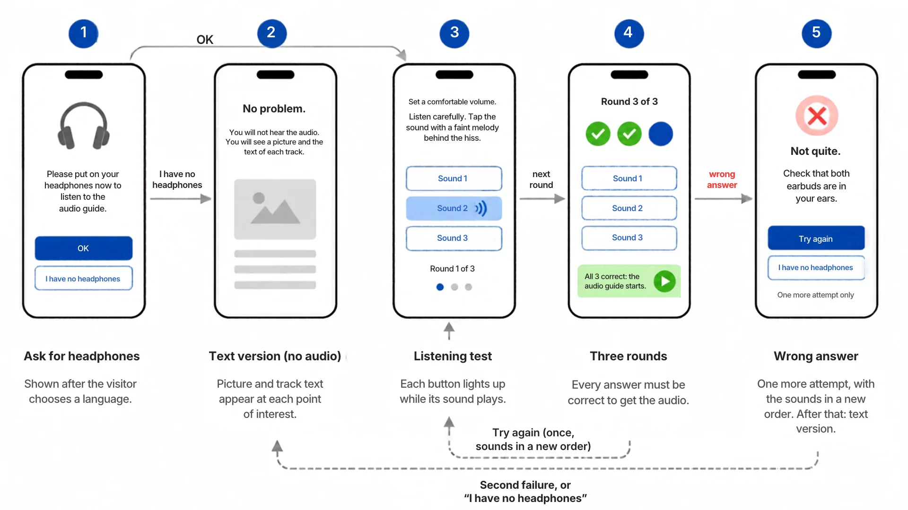

Rosa Sala
Audioguías con códigos QR y altavoces del móvil: ¿molestan a los demás los visitantes que no llevan auriculares?

La respuesta breve
- Una audioguía con código QR (una aplicación web que funciona en el navegador del móvil) suele reproducir el sonido a través del altavoz del teléfono. Una página web no puede dirigirlo de forma fiable al auricular, que es el pequeño altavoz utilizado para las llamadas y que emite el sonido a un volumen más bajo.
- Una aplicación nativa (de las que se descargan desde App Store o Google Play) puede controlar mejor la salida de audio: puede utilizar el auricular o permitir la reproducción solo cuando hay unos auriculares conectados. Pero los visitantes tienen que descargarla e instalarla primero, y muy pocos lo hacen.
- En la mayoría de los espacios, bastan unas medidas sencillas: los visitantes pueden utilizar sus propios auriculares o bajar el volumen y acercarse el móvil al oído.
- Para los espacios y vehículos que necesitan un mayor control, una breve prueba basada en un efecto auditivo llamado «tono de Huggins» permite comprobar directamente en el navegador si el visitante lleva auriculares. Quienes no superen la prueba podrán acceder al mismo contenido en forma de texto e imágenes.
La preocupación es real: el ruido de los móviles molesta a la mayoría de la gente
Cuando presentamos una audioguía con código QR a un museo o a una empresa de excursiones en barco, siempre surge la misma objeción: «La gente pondrá el volumen a tope y molestará a los demás».
El temor está justificado. En una encuesta de Transport for London realizada a 1.000 pasajeros en junio de 2025, el 70 % afirmó que le molestan la música a todo volumen y las llamadas telefónicas sin auriculares [1]. En otra encuesta de YouGov, publicada en abril de 2025, el 79 % de los británicos afirmó que le molesta que otras personas reproduzcan música o vídeos a todo volumen en el móvil, y el 41 % dijo que le molesta mucho [2].
Una sala de museo tranquila o un barco turístico en el que los pasajeros permanecen sentados muy juntos durante una hora son precisamente los lugares donde este problema puede cobrar importancia. Por eso, algunos establecimientos prefieren las aplicaciones nativas o los dispositivos de alquiler, que permiten controlar mejor la salida de audio. Pero estas alternativas también tienen sus inconvenientes y sus costes.
Por qué las audioguías en forma de aplicación web se reproducen por el altavoz
La mayoría de los smartphones tienen dos salidas de audio.

- El auricular está en la parte superior de la pantalla. Está pensado para las llamadas telefónicas, cuando nos acercamos el móvil a la oreja. Emite el sonido a un volumen bajo y de forma discreta.
- El altavoz suele estar en el borde inferior del teléfono. Se utiliza para reproducir música, vídeos y llamadas en modo manos libres.
En muchos smartphones recientes, el auricular también funciona como un segundo altavoz para reproducir música y vídeos. En ese caso, emite el sonido al volumen habitual de un altavoz, no al volumen reducido de una llamada telefónica.
Una app nativa puede indicar al sistema operativo que reproduzca el sonido en modo de llamada, a través del auricular. Las aplicaciones de mensajería hacen precisamente eso cuando nos acercamos el móvil a la oreja para escuchar un mensaje de voz. Una página web, en cambio, no puede controlar esta función de forma fiable:
- En Android, ni Chrome ni Firefox admiten la función del navegador que permite seleccionar una salida de audio (
setSinkId) [3]. - En el iPhone, Safari puede redirigir el sonido al auricular como efecto secundario del uso del micrófono. Sin embargo, los informes de errores registrados a lo largo de varias versiones de iOS muestran que este comportamiento no es fiable [4]. Además, una página web tendría que pedir permiso para acceder al micrófono de cada visitante, solo para reproducir una grabación.
Por eso, una audioguía que funciona en el navegador reproduce el sonido a través del altavoz, salvo que el visitante conecte unos auriculares. Se trata de una limitación técnica de los navegadores móviles, no de una decisión de diseño de los proveedores de audioguías.
Qué puede hacer una app nativa y cuánto cuesta
Una app nativa ofrece más control sobre el audio que una página web. Puede reproducir el sonido a través del auricular, como durante una llamada telefónica. También puede impedir que se inicie la reproducción hasta que se conecten unos auriculares. Desde el punto de vista del control del ruido, es una solución eficaz.
El inconveniente es que reduce el alcance. Antes de poder escuchar nada, los visitantes tienen que encontrar la app, descargarla e instalarla. En nuestro análisis de 175 apps oficiales de audioguías de museos, solo el 2,47 % de los visitantes había descargado la aplicación. En una excursión en barco de una hora, donde los visitantes quizá tengan que recurrir a los datos móviles y la hora de salida está fijada, la barrera es todavía mayor.
Por tanto, la elección no está entre una app web ruidosa y una app nativa silenciosa. Se trata de elegir entre una audioguía que prácticamente todos los visitantes pueden abrir al instante y otra que pocos llegarán a utilizar. La pregunta adecuada es si una app web puede ofrecer un control similar sobre el uso de auriculares. La respuesta es sí, como veremos a continuación.
Por qué repartir auriculares tampoco es una buena solución
Auriculares desechables. Antes los ofrecíamos nosotros mismos, pero dejamos de hacerlo. Los auriculares son pequeños dispositivos electrónicos, y los aparatos de este tipo se encuentran entre los residuos electrónicos que menos se reciclan. Según el Global E-waste Monitor 2024 de Naciones Unidas, en 2022 se generaron en todo el mundo 62 millones de toneladas de residuos electrónicos. Solo el 22,3 % se recogió y recicló de forma documentada. En el caso de los pequeños dispositivos electrónicos, la tasa de reciclaje documentada fue de apenas el 12 % [5].
También hay una dimensión medioambiental que los museos no deberían pasar por alto. En un momento en que el cambio climático y la reducción de residuos ocupan un lugar cada vez más importante en el debate público, los visitantes prestan cada vez más atención al impacto medioambiental de los lugares que visitan. Una cesta llena de auriculares de plástico en la entrada, con cada par utilizado durante apenas una hora antes de acabar en la basura, transmite un mensaje poco afortunado. Supone una contradicción visible con la imagen de una experiencia de visita moderna y con una actitud responsable hacia los recursos. Algunos visitantes lo notarán y puede que incluso lo mencionen en sus reseñas.
Conectores. Los auriculares con cable deben ser compatibles con el móvil de cada visitante. Según el dispositivo, pueden necesitar una toma de 3,5 mm, Lightning (en los iPhone más antiguos) o USB-C. Desde el 28 de diciembre de 2024, los nuevos móviles comercializados en la UE deben disponer de un puerto USB-C [6]. Sin embargo, los dispositivos que los visitantes ya tienen seguirán utilizando distintos tipos de conexión durante años. Un establecimiento tendría que mantener en stock tres tipos diferentes de auriculares.
Auriculares Bluetooth de préstamo. Cada visitante tendría que emparejarlos con su propio móvil, y probablemente el personal tendría que ayudar a menudo. Al terminar la visita, el visitante tendría que eliminar los auriculares de la lista de dispositivos emparejados de su móvil («olvidar dispositivo»). Después, el establecimiento tendría que limpiarlos y cargarlos antes de que pudiera utilizarlos el siguiente visitante. Así se recupera precisamente el trabajo de gestión e higiene que una audioguía en el propio móvil del visitante pretende evitar.
Qué recomendamos a la mayoría de los espacios
En la mayoría de los lugares bastan unas cuantas medidas sencillas.
- Recomiende a los visitantes que traigan sus propios auriculares. Indíquelo al hacer la reserva, en las entradas y en su página web. Muchos visitantes ya llevan auriculares consigo.
- Explique la alternativa. Quienes no lleven auriculares pueden bajar el volumen y acercarse el móvil al oído, como si estuvieran hablando por teléfono (véase la imagen). Si el sonido sale por el altavoz situado en el borde inferior del móvil, es ese extremo el que deben acercarse al oído.
- Utilice carteles y cuente con el personal. Un cartel bien visible junto al código QR deja claras las instrucciones. El personal de sala puede dirigirse amablemente a quienes no las sigan, igual que haría ante cualquier otro comportamiento que moleste a los demás.

Hay dos factores que ayudan en la práctica. Las pistas de la audioguía son cortas y se reproducen de una en una, no de forma continua como la música. Además, según nuestra experiencia, suele bastar con dar instrucciones claras y recordar brevemente a los visitantes cómo utilizarla. Muchos de nuestros clientes trabajan así, sin proporcionar auriculares.
Hay algo que no funciona: bajar el volumen de las grabaciones. Lo probamos con uno de nuestros clientes. Los visitantes simplemente subían el volumen de sus móviles, mientras que quienes tenían dispositivos con altavoces menos potentes apenas podían oír la audioguía, incluso al volumen máximo. La razón es que los móviles presentan diferencias considerables en cuanto al volumen que pueden alcanzar sus altavoces, algo de lo que pocas personas son conscientes. En 2023, GSMArena midió los altavoces de más de 110 móviles. La diferencia entre el modelo más potente y el menos potente fue de unas 10 unidades en su escala de volumen [9]. Esto demuestra hasta qué punto puede variar el volumen de reproducción de un dispositivo a otro. Una grabación que se oye perfectamente en un móvil con un altavoz potente puede resultar demasiado baja en otro menos potente. El archivo de audio no puede controlar el volumen: eso depende del propio visitante.
Las opciones de un vistazo
| Opción | Ventajas | Inconvenientes |
|---|---|---|
| Auriculares propios de los visitantes | No requiere equipos adicionales ni tareas de gestión | No todos los visitantes llevan auriculares |
| Móvil junto al oído, con el volumen bajo | No requiere ningún equipo adicional | Menos cómodo; depende de la colaboración del visitante |
| Auriculares desechables | Disponibles en el momento | Generan residuos, tienen un coste recurrente y requieren distintos tipos de conectores |
| Auriculares Bluetooth de préstamo | Reutilizables | Hay que emparejarlos, limpiarlos y cargarlos; requieren tiempo del personal |
| App nativa de audioguía | Puede utilizar el auricular o exigir que haya auriculares conectados | Pocos visitantes llegan a descargarla |
| Audioguía con código QR y comprobación de auriculares | No requiere descarga; comprueba si se utilizan auriculares; ofrece una versión en texto para los demás | Incluye una breve prueba al principio |
Para requisitos más exigentes: una comprobación de auriculares basada en el tono de Huggins
Algunos operadores necesitan algo más que confiar en el sentido común de los visitantes. Un caso típico es el de un barco turístico o un autobús en el que los pasajeros no pueden alejarse de un vecino que escucha el sonido a todo volumen. Para estos casos, Nubart ha desarrollado una comprobación de auriculares que funciona directamente en el navegador, sin necesidad de instalar ninguna app.
La ciencia: un sonido que solo se oye con auriculares
La prueba utiliza el tono de Huggins, un efecto auditivo descrito por primera vez por Cramer y Huggins en 1958 [7]. Funciona de forma parecida a una película en 3D.
En un cine 3D, cada ojo recibe una imagen ligeramente diferente. Ninguna de las dos imágenes contiene por sí sola información sobre la profundidad. El cerebro compara ambas imágenes y genera la sensación de profundidad. Si te quitas las gafas, los dos ojos ven ambas imágenes al mismo tiempo y el efecto 3D desaparece.
El tono de Huggins produce un efecto similar con el sonido.
- Dos sonidos casi idénticos. Cada oído recibe el mismo ruido, parecido al sonido de una cascada. En uno de los oídos se modifica una pequeña parte de ese ruido. La diferencia es demasiado sutil para percibirla por separado.
- El cerebro se encarga del resto. Cada oído, por separado, solo percibe el ruido. Pero el cerebro compara las señales que recibe de ambos oídos, detecta la pequeña diferencia y la transforma en un tono suave. Ese tono no está presente ni en la señal del oído izquierdo ni en la del derecho: solo existe en el cerebro de quien escucha. Al desplazar gradualmente la parte modificada, el tono se convierte en una breve melodía.
- Los auriculares son como las gafas 3D. Proporcionan a cada oído una señal de sonido independiente. A través de un altavoz, las dos señales se mezclan en el aire y ambos oídos reciben prácticamente la misma mezcla. El cerebro pierde así la referencia necesaria para compararlas, por lo que la melodía se debilita o desaparece.
La idea de utilizar este efecto para comprobar si alguien lleva auriculares surgió de unos investigadores del University College London. Realizaron pruebas auditivas en línea y necesitaban saber si las personas que participaban desde casa llevaban realmente auriculares. Para averiguarlo, hicieron un experimento: un grupo escuchó con auriculares y otro a través de altavoces. Aproximadamente el 80 % de quienes utilizaron auriculares oyó el tono oculto en todos los intentos. En el grupo que escuchó a través de altavoces, solo lo consiguió alrededor del 20 %.
¿A qué se debe ese 20 %? Los participantes utilizaban los altavoces de sus propios ordenadores. Según la explicación de los investigadores, una persona sentada cerca de los altavoces izquierdo y derecho, justo entre ambos, todavía puede percibir las dos señales parcialmente separadas [8]. Un teléfono móvil no permite lo mismo: sus altavoces están separados por apenas unos centímetros, por lo que las dos señales se mezclan por completo. En nuestras propias pruebas, la melodía se escuchaba claramente en un ordenador portátil, pero no se oía a través del altavoz de un móvil.
La prueba también detecta un truco bastante habitual: escuchar con un solo auricular. Al recibir sonido por un solo oído, el cerebro no tiene una segunda señal con la que comparar, por lo que no se percibe ningún tono.
Cómo funciona la prueba para el visitante

Después de seleccionar el idioma, se pide al visitante que se ponga los auriculares. Aparecen dos botones, cada uno de los cuales conduce a un recorrido diferente:
- «No tengo auriculares»: el visitante accede directamente a la versión de texto, sin realizar ninguna prueba. Para cada pista se muestran una imagen y el texto correspondiente. En una audioguía Nubart MOTION con pistas que se activan automáticamente, el texto y la imagen aparecen cuando el vehículo llega al correspondiente punto de interés. No se reproduce ningún sonido.
- «OK»: el visitante realiza una breve prueba de audio y, a continuación, accede a la audioguía.
- El visitante escucha tres sonidos y pulsa el botón correspondiente al que contiene una melodía tenue oculta tras el ruido. Cada botón se ilumina mientras se reproduce el sonido correspondiente.
- El ejercicio se repite tres veces. Las tres respuestas deben ser correctas.
- Si se equivoca, el visitante dispone de un segundo intento, esta vez con los sonidos en un orden diferente. Adivinar sirve de poco: incluso teniendo dos oportunidades, solo unos 7 de cada 100 visitantes superarían la prueba por pura suerte.
- Quienes superen la prueba acceden a la audioguía. Quienes fallen también en el segundo intento reciben la versión de texto, para que nadie se quede sin acceso al contenido.
Nadie se queda sin contenido: texto e imágenes en lugar de audio
Esta es la parte que más nos importa. Los visitantes que no tengan auriculares o no superen la prueba no quedan excluidos. Pueden seguir el mismo recorrido en la pantalla del móvil: se muestran fotografías, galerías de imágenes y el texto completo de cada pista en el momento adecuado. En un barco o un autobús, cada texto aparece cuando el vehículo llega al correspondiente punto de interés.
Todo el mundo tiene acceso al contenido. Solo la reproducción de audio depende del uso de auriculares.
La prueba basada en el tono de Huggins no es perfecta. Algunos visitantes con pérdida auditiva en un oído no la superarán. Lo mismo puede ocurrirles a quienes utilicen un solo auricular o tengan el móvil configurado en modo mono. Además, un entorno muy ruidoso puede dificultar la prueba [8]. Para todas estas personas está disponible la versión de texto. Esta comprobación no es una prueba de audición y nunca determina si alguien puede seguir la visita. Se trata de la misma versión que pueden utilizar los visitantes sordos o con dificultades auditivas.
La comprobación no termina cuando empieza la visita. Si los auriculares se desconectan durante el recorrido, la audioguía lo detecta y detiene la reproducción. Esto funciona tanto con auriculares con cable como con auriculares Bluetooth.
De este modo, una audioguía en forma de aplicación web ofrece el tipo de control que antes solo era posible con una aplicación nativa, pero sin necesidad de descargar nada.
Conclusión: empezar por lo sencillo y añadir la comprobación solo donde sea necesario
Nuestro consejo es que confíe primero en sus visitantes y empiece sin activar la comprobación. Pídales que traigan sus propios auriculares y explique a quienes no los tengan cómo escuchar sin molestar a los demás: bajando el volumen y acercándose el móvil al oído. En la mayoría de los espacios, esto es suficiente.
Si más adelante recibe quejas o reseñas negativas por el ruido, no tendrá que cambiar nada más. Activar la comprobación de auriculares en una audioguía Nubart ya existente solo requiere unos pocos clics por nuestra parte. Sus códigos QR, sus contenidos y la forma habitual en que los visitantes utilizan la audioguía seguirán siendo los mismos.
Fuentes
- Transport for London, comunicado de prensa, 26 de agosto de 2025: New TfL campaign encourages customers to use headphones on public transport.
- YouGov, 28 de abril de 2025: Littering, loudspeakers and Lime bikes: what public nuisances bother Britons most?
- Can I use: compatibilidad de los navegadores con
HTMLMediaElement.setSinkId, comprobada en noviembre de 2026. - WebKit Bugzilla, error 218012, abierto en 2020, última modificación en mayo de 2026.
- UIT y UNITAR, Global E-waste Monitor 2024, comunicado de prensa del 20 de marzo de 2024.
- Comisión Europea, 28 de diciembre de 2024: normativa de la UE sobre cargadores universales (EU common charger rules).
- Cramer, E. M., y Huggins, W. H. (1958). Creation of pitch through binaural interaction. Journal of the Acoustical Society of America, 30(5), 412-417.
- Milne, A. E., Bianco, R., Poole, K. C., et al. (2021). An online headphone screening test based on dichotic pitch. Behavior Research Methods, 53, 1551-1562.
- GSMArena, 30 de diciembre de 2023: Here are the loudest phones we tested in 2023.
Esperamos que este artículo te haya resultado útil. Suscríbete a nuestro boletín para no perderte ninguna de nuestras publicaciones.
Quizá también te interese

La tasa de adopción de las apps de audioguías de los museos
Un análisis en profundidad de los datos reales muestra que menos del 3 % de los visitantes de los museos usan aplicaciones de audioguía, lo que plantea serias dudas sobre su eficacia.
Las audioguías de Nubart son accesibles
La accesibilidad es una preocupación cada vez mayor en los museos. Con las audioguías de Nubart puedes cumplir todos los requisitos.